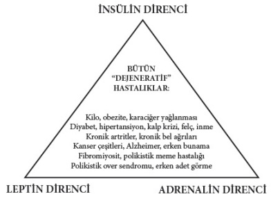

Şekil-2: Hiperinsülinemik hastalıklar
Bu tehlike üçgeni (Şekil-2), bütün dejeneratif hastalıkların oluşmasında tek payda olarak büyük bir risk faktörüdür. Metabolizma açısından önemli olan bu sacayağı, bütün vücut hücrelerinde, dokularında ve organlarında arteriyoskleroz (küçük damarların hasta olması) nedenidir. Arteriyoskleroz ya da ateroskleroz, genel olarak bütün organlarda yaygın bir şekilde gelişir.
Ateroskleroz, başlangıçta fark edilmeyen karaciğer yağlanması, kilo alma ve şeker metabolizmasının bozulması ile sinsi bir şekilde başlar. Örneğin, şeker metabolizma bozukluğu senelerce sinsice devam ettikten sonra, TİP II dediğimiz şeker hastalığı (diyabet) olarak ortaya çıkar. Bu sırada sinsice gelişmekte olan adrenalin direnci sonucu kan basıncı da yükselir.[9], [10], [11]
Önemli olan diğer bir nokta da sacayağında gördüğümüz bu üç faktörün (insülin, leptin ve adrenalin direnci); ailesel, kalıtsal ya da konjenital olmadığı, iç ve dış etkenlerle ileri yaşlarda ortaya çıkmaları konusudur.
Önemle vurgulanması gereken, sacayağı üçgeni (Şekil-2) içinde listelemiş olduğumuz bütün dejeneratif hastalıkların önlenebilir hastalıklar olmalarıdır.
Bu kitap, işte bu nedenlerle kaleme alınmıştır. Kendi sağlığımızı ele almanın ve hastalanmamızı önlemenin zamanı gelmiştir. Sağlığımızı korumak her açıdan en rahat ve en ucuz yoldur. İnsülin ve leptin direnci olan kişiler sık sık acıkır ve devamlı olarak ‘acıkma’ ya da ‘doyamama’ korkusu içinde yaşarlar. Hemen acıkınca da buldukları her türlü tatlı, çikolata, şeker ve şekerli içeceklere saldırırlar. Diğer bir deyişle sık sık acıkıyorsak ya da sık sık bir şeyler atıştırmadan duramıyorsak, vücudumuzda insülin ve leptin direnci gelişmiş demektir. Tüm hücrelerimizde henüz gözümüzle görüp fark edemediğimiz sinsi, hiperinsülinemik hastalıklar gelişmektedir. Kan insülin düzeyi normalin üstünde olmaya başladığında, subklinik[12] olarak hücresel düzeyde kronik dejeneratif hastalıklar başlamıştır. Bizler farkında olmadan, vücudumuzda sinsi bir düşük yoğunluklu savaş başlamış ve devam ediyor demektir.
Kandaki insülin hormonu düzeyi ne kadar olmalıdır?
12 saatlik açlıktan sonra alınan kanda normal kan insülin hormonu değeri, 5 IU/ml (Internasyonal Ünite/ml) dolaylarında olmalıdır. Kan insülin değerleri 2,5-5 IU/ml bulunan kişilerin uzun ömürlü oldukları ve sağlıklı yaşadıkları birçok bilimsel araştırma ile gösterilmiştir.
İnsülin ve leptin direncinin en önemli belirtisi nedir?
İnsülin ve leptin direnci devam ettiği süre boyunca ne yağlarımız yıkılabilir ne de sağlıklı bir şekilde kilo vermemiz mümkün olabilir. Bütün organlarımızın içinde ve etrafında yağlar birikmeye devam eder. Bacaklar, kalçalar, gıdık, karaciğer, kalp, böbrek ve karında yağlar birikmiştir.
Göbekte yağlanma, hem erkeklerde hem de kadınlarda hafif derecede olsa bile araba tekerliği şeklini almaya başlamıştır. Karaciğer yağlanması sonucu gelişen göbek yağlanması, insülin ve leptin direncinin önemli bir belirtisidir.[13],[14] Bu, karnımızın içinin ve bütün organlarımızın yağla dolu olduğunun bir göstergesidir! İnsülin ve leptin direnci ortadan kalkmadan bu yağlar yıkılmaz ve kilo verilemez. Aç kalarak birkaç kilo verilebilse dahi, verilen kilolardan daha fazlasının kısa bir süre sonra geri alınması, karaciğer yağlanması sonucunda gelişmiş olan insülin ve leptin direncinin neticesidir.
Demek oluyor ki, aç kalarak ya da düşük kalori ile beslenerek kilo verilse bile, verilen kilolar kısa sürede geri alınıyor. Sık sık, az miktarda ve düşük kalorili yiyeceklerin de mutlaka insülin hormonunun salgılanmasına neden olduğunu ve karaciğer yağlanması, göbek çevresinin artması ile birlikte insülin ve leptin direncini daha da artırdığını unutmamamız gerekir. Bu nedenle her hafta yeni bir diyet listesi piyasaya sürülmekte, medya ve basın organlarında yer almaktadır. Bunlar, bir yandan tercüme diyet olmaları, öte yandan da insülin ve leptin direncine neden olmaları sebebi ile büyük çoğunluğunun kalıcı bir zayıflama sağlamadığı ve başarısız olduğu kısa sürede ortaya çıkmaktadır. Bütün tercüme diyetler, hangi ülkede düzenlenmişse kısmen o yöre halkının imkân ve alışkanlıklarına yönelik olarak hazırlanmaktadır.
Önemli olan yiyeceklerimizi, mutfağımızda ve pazarlarımızda kolaylıkla temin edilebilen yerel ürünlerimizle hazırlayabilmemizdir. Alışmış olduğumuz, damak tadımıza göre hazırlanmış ve rahatlıkla ulaşabileceğimiz doğal besinleri tüketmemiz, diyetin sürekli bir şekilde uygulanabilir olmasını da sağlayacaktır.
‘Karatay Diyeti’nin piyasada bulunan diğer diyetlerden farkı nedir?
Bu kitap, insülin ve leptin direncini kırmak, karaciğer yağlanmasının dolayısı ile göbek yağının ilerlemesinin önüne geçmek ve geriletmek amacını hedef almıştır. Sıradan bir mucize diyet listesi değildir. Sağlıklı bir yaşam biçimi edinmek için kolayca uygulanabilen öneriler içermektedir.
Karatay Diyeti’nin diğer diyetlerden daha rahat uygulanabilir ve farklı olmasının temelinde, düşük glisemik indeksli besinlerin tüketilmesinin öneminin öne çıkması yatmaktadır.[15], [16] Ek olarak, birçok diyet ile senelerden beri önerilmekte olan günlük kalori hesabının yer almamasının yanı sıra, yasaklanmış ya da kısıtlanmış olan sağlıklı yağların, sağlık ve özellikle kilo verme sürecinde önemlerinin vurgulanmasıdır.
Sağlıklı yağlar tüketilmedikçe, insülin ve leptin direnci kırılamaz ve kilo vermemiz mümkün olmaz! Diğer bir deyişle vücudumuzda depolanmış ve kanımızda birikmiş yağların (trigliseridlerin) yıkılarak azalması için sağlıklı olan yağları mutlaka tüketmemiz gerekiyor.
Karatay Diyeti, sıkıntıya girmeden kolayca ve rahatlıkla uygulayabileceğiniz bir beslenme ve yaşam biçimini size sunmaktadır. Her gün semt pazarlarında bulunan yiyeceklerin sağlıklı bir şekilde hazırlanıp, tüketilmelerinin planlanması için bir kılavuz niteliğindedir. Sağlıklı bir yaşam için yedisinden yetmişine, çocuk, genç, hamile, lohusa, hasta her bireyin hayat boyu kolaylıkla uygulayabileceği önerileri içermektedir.
Dokularımızı, insülin ve leptin hormonlarının mesajlarını tekrar algılayacak, üzerlerinde oluşmuş insülin ve leptin direncini kıracak duruma nasıl getirebiliriz?
İnsülin ve leptin direncini kırmak, birden fazla yaşam ve beslenme biçimi değişikliği ile mümkündür. Bunları şöyle sıralayabiliriz:
Fizik aktivite
Yapılan bilimsel araştırmalar, insülin ve leptin direncinin ilk etapta hareketsizliğe bağlı olarak bacak adalelerinde başladığını göstermiştir. İnsan vücudunda en büyük kitleyi bacak ve kalça adaleleri oluşturur. Dolayısı ile yakıta en fazla ihtiyacı olan ve bu yakıtı en yoğun düzeyde kullanan dokular, bacak ve kalça adaleleridir. Bu nedenle düzenli olarak (devamlı bir şekilde) fizik aktivite yaparak, bacak ve kalça adalelerinin insülin ve leptin hormonlarına olan hassasiyetlerini geri kazanmak mümkün olmaktadır.
Bacak adalelelerinden sonra, karaciğer ve diğer organlarda insülin ve leptin direnci gelişmesi izlenir. Şişman kişilerde karaciğer yağlanmasının oluşması sonucu, göbek etrafında araba tekerleği şeklinde yağların birikmesinin nedeni de budur. İşte bu sebeplerle en başta fizik aktivitemizi artırarak insülin ve leptin direncinin gelişmesini önlemek elimizdedir. Günlük fizik aktivitemizi artırarak, oluşmuş olan insülin ve leptin direncini, bunların sonucu gelişebilecek dejeneratif hastalıkları önlemek ve geri çevirmek de her zaman mümkündür.
Hekimlerin babası olan İstanköylü Hipokrat (Hippocrates), asırlar önce (MÖ V. yüzyıl) “Uzun yol yürüyen uzun yaşar” demiş ve ada halkını eşeğe çok bindikleri için sağlıklarını kaybedecekleri konusunda uyarmıştır.
Düşük glisemik indeksli gıdalar tüketmek
Muntazam bir şekilde fizik aktivite ile birlikte ‘sağlıklı karbonhidratları’ diğer bir deyişle düşük glisemik indeksli (Gİ) gıdaları tüketmeye başladığımızda insülin ve leptin direnci yavaş yavaş kırılacağından kilo vermeye başlarız.[17], [18] Bununla birlikte yüksek glisemik indeksli yiyecekleri, içecekleri ve işlenmiş bütün gıdaları (glisemik indeksleri yüksektir ve trans yağ içerirler) hayatımızdan çıkardığımızda yağlarımız giderek azalır. Depo yağlarımızın yıkılarak azalması sonucu kilo verirken aynı zamanda dinçleşiriz, yorgunluk ve halsizlik hissetmeyiz, uykularımız da düzene girer. Karaciğerimiz sağlıklı çalışmaya başlayacağı için bütün hormonlarımızla birlikte kan yağlarımız da sağlıklı düzeylere iner. Yükselmiş olan kan basıncımız da normalleşir.
Sağlıklı yağları kullanmak
Düşük glisemik indeksli gıdalar tüketirken, sağlıklı yağların da kullanılmasıyla insülin ve leptin direncini önlemek ve kırmak daha da kolaylaşacaktır. Sağlıklı yağların insülin ve leptin direncini kırarak hiperinsülinemik hastalıkları önlediği birçok bilimsel çalışma ile gösterilmiştir. Bu konuyu üçüncü bölümde ‘tüketmemiz gereken sağlıklı yağlar ve uzak durmamız gereken trans yağlar’ konusu içinde kapsamlı bir şekilde anlatacağız.
İşlenmiş gıdalardan uzak durmak
Yiyeceklerimizi mümkün olduğu kadar doğal, bütün ve bozulmamış olarak, yani herhangi bir fabrikaya girip çıkmamış ve endüstriyel işlem görmemiş şekilde tüketmek, insülin ve leptin direncini kırmak için son derece önemlidir.
Doğal yiyecek ve içecekler, lifleri parçalanmamış olduğu için düşük glisemik indeksli gıdalardır. Bu önemli özelliklerinin yanı sıra, organizmaya zarar veren herhangi bir ilaç, yemek boyası ve kimyasal katkı maddesi ya da trans yağ içermezler. Bu nedenlerle sağlıklı beslenme ve yaşam için tercih edilmelerinde sonsuz yararlar bulunmaktadır.
Bu alanda otorite olan Sayın Prof. Dr. Ahmet Aydın’ın 7’den 70’e Taş Devri Diyeti adlı kitabı doğru beslenme konusunda oldukça kapsamlı olarak yazılmış en önemli kaynaklardan biridir ve bu konuda şimdiye kadar söylenmemiş bütün gerçekleri bilimsel olarak gözler önüne sermektedir.
Düşük glisemik indeksli gıdalar insülin direncini nasıl kırıyor?
Düşük glisemik indeksli gıdalar denilen ‘sağlıklı’ karbonhidratlar, uzun süre tokluk hissi sağlayan yiyecekler grubudur.[19] Bu tür gıdalarla beslenen kişilerde, en güçlü hislerden biri olan ‘acıkma hissi’ oluşmaz. Sonuç olarak, sık sık yemek yeme dürtüsü ortadan kalkar. Reaktif hipoglisemi atakları önlenmiş olur. Sık sık insülin hormonu salgılanmadığı için de doğal olarak insülin ve leptin direnci gelişemez. Gelişmiş olan da yavaş yavaş geriler. Göbek ve karna depo olmuş yağlar da yavaş yavaş yıkılmaya başlar.
Glisemik indeks nedir? Düşük glisemik indeksli (Gİ) gıdaların yararları nelerdir?
Glisemik indeks (Gİ), herhangi bir yiyeceğin içinde bulunan karbonhidrat miktarına göre hesaplanır. Karbonhidrat içeren bir yiyecek kana geçtiğinde, kan şekerini yükseltme hızını gösterir.
Örneğin, 50 gr toz şekerin glisemik indeksi hızlı bir şekilde kan şekerini yükselttiği için çok yüksektir ve 100 (yüz) olarak kabul edilir. Diğer karbonhidrat içeren yiyeceklerin glisemik indeksleri ise 100 (yüz) üzerinden -100’e (yüze) oranla- hesaplanır. Karbonhidrat içeren yiyecekler düşük, orta ve yüksek glisemik indeksli olarak üç gruba ayrılır:
• Yüksek Gİ: 100-70
• Orta Gİ: 70-50
• Düşük Gİ: 0-55
Rafine edilmiş ve işlenmiş hazır yiyeceklerin glisemik indeksleri de şeker gibi çok yüksektir ve 100 olarak hesaplanmıştır.
Fabrikalarda büyük miktarlarda üretilen bütün yiyecekler, uzun süre bozulmadan kalabilmeleri için çeşitli işlemlere tabii tutulurlar. Bu tür gıdalar, raf ömürleri uzatılmak amacı ile doğal olan faydalı liflerinden, yağlarından ve vitaminlerinden endüstriyel işlemlerle arındırılır, böylece kısa sürede bozulmaları önlenmiş olur.
Özgün maddeleri yok edilen yiyeceklere daha sonra damak tadını sağlama amacı ile çeşitli suni tatlandırıcılar, gıda katkı maddeleri ve gıda boyaları eklenir. Bu işlemleri görmüş yiyecekler ağıza alındığı anda (ağzımızdan emilerek), hızlı bir şekilde kan şekerimizi yükseltirler. Ayrıca lifleri (posaları) yok edilmiş olduğundan, hazmedilmeleri hızlanmış ve kolaylaşmıştır. Mideden çabucak geçerek incebağırsağa ulaşırlar. Uzun bir tüp şeklinde olan incebağırsağın başlangıç bölümünden de hemen hazmedilirler ve bağırsağın son bölümüne kadar bile ulaşamazlar. Mide ve bağırsaklar kısa süre içinde boşalır.
Mide ve bağırsakların hemen boşalması ile bu organlarda bazı hormonlar salgılanır. Bu hormonlar, mide ve bağırsakların boşalmış olduğunu, sistemde yeterli besin ve yakıt kalmadığı mesajını beynimize iletir. Bunun sonucu da acıkma hissi ve yemek yeme isteğidir.
Rafine edilmiş ve işlem görmüş hazır yiyeceklerin hazmedilmeleri çok hızlı olmaktadır. Bu tür yiyecekler, mide ve bağırsaklardan çok çabuk emilip kan şekeri ve insülinimizin hızla yükselmesine neden olur. İnsülin hormonunun aşırı bir hızla yükselmesi, kan şekerinin çabucak kullanılmasına ve hızla düşmesine neden olur. Reaktif hipoglisemi diye adlandırdığımız bu durum, insülin ve leptin direncinin en önemli belirtisidir. Aşırı açlık hissi, mide ezilmesi, huzursuzluk gibi rahatsızlıların bir an önce giderilmesi için tatlı, çikolata ve şekerlere veya aşırı şekerli içeceklere saldırmamız kaçınılmaz olur. Bu da sık sık yeme ihtiyacımızı kamçılayacak ve de bahsetmiş olduğumuz kısır döngüyü başlatarak insülin ve leptin direncinin gelişme ve ilerlemesine neden olacaktır.
Büyük bir tabak mantı ya da çift kaşarlı bir tost yedikten 2 saat sonra tekrar acıkmamızın nedeni, rafine unlarla hazırlanmış bu hazır yiyeceklerin doğal sonuçlarıdır. Yüksek glisemik indeksli karbonhidrat içeren yiyecek ve içecekler, insülin ve leptin direncini kamçılar.
Lifi fazla olan ya da posalı yani karbonhidrat oranı düşük yiyeceklerin hazmedilmeleri yavaş olduğundan, mide ve incebağırsakta uzun süre kalırlar. Bu nedenle, kaba ve doğal lifi fazla olan besinlerin mide ve bağırsaklarımızda hazım süresi uzundur. Yiyeceklerin içindeki lif miktarları arttıkça, glisemik indeks değerleri azalır. Bu nedenle şekerimiz ve buna paralel olarak insülin hormonu yavaş yavaş ve azar azar yükselir. Yemekten 2 saat sonra acıkma hissimiz ortaya çıkmaz ya da midemizde ezilme hissetmeyiz. Yiyecekler, oldukça uzun olan incebağırsağın sonuna kadar bağırsakta kalarak hazmedilmeye devam ederler.
Yiyeceklerin mide ve ince bağırsakta uzun süre kalmaları sonucu, başta leptin hormonu olmak üzere, mide ve ince bağırsağın son bölümlerinden salgılanan bazı hormonlar, beynimize sistemde yeterli yakıt olduğunu ve henüz herhangi bir yiyeceğe ihtiyaç olmadığını iletirler. Yemek yedikten 1-2 saat sonra acıkmamamızın ve tokluk hissimizin uzun süre devam etmesinin nedeni, düşük glisemik indeksli gıdaların tüketilmesidir.
Düşük glisemik indeksli yiyeceklerin tüketilmesinin faydalarını şöyle sıralayabiliriz:
• Tokluk hissimiz uzun sürer, acıkmayız ve canımız sık sık bir şeyler yemek istemez. Tatlı, çikolata ve şekere hücum etmeyiz.
• Kan şekerimizde ani iniş çıkışlar olmadığından, şeker ve tatlı arzu etmeyiz. Reaktif hipoglisemi sonucu ortaya çıkan, açlık, halsizlik, yorgunluk ve sinirlilik halleri oluşmaz. Yemek yedikten 1-2 saat sonra gelişen hipoglisemi nöbetleri önlenir.
• Düşük glisemik indeksli bütün yiyecekler (sağlıklı karbonhidratlar), uzun süre tokluk hissi verirler.[20] Bu süre içinde leptin hormonu salgılanacağından, ihtiyacımız olan enerji depolanmış yağlarımızdan sağlanmış olur. Dolayısı ile kendi depo yağlarımızın ara öğün olarak kullanılmasına fırsat vermiş oluruz. Bu nedenle sağlıklı bir şekilde kilo vermek mümkün olur ve verilen kilolar birkaç ay sonra geri alınmaz!
• TİP I ve TİP II şeker (diyabet) hastaları, düşük glisemik indeksli yiyeceklerle beslendikleri ve ekmek yemedikleri zaman, kan şekeri kontrolleri daha kolay ve sağlıklı şekilde sağlanır.[21], [22] Şeker hastalarının aşırı kilo almaları önlenir ve insülin ihtiyaçları giderek azalır. Bu şekilde şeker hastalarında görülen komplikasyonların birçoğu önlenir ve azalır.[23]
Düşük glisemik indeksli besinler vücudumuzda ne gibi değişikliklere neden oluyor?
• Gün boyunca kan insülini düşük kalır ve dalgalanma göstermediği için acıkma hissi olmaz. Uzun süre tokluk hissedilir.
• Ara öğün olarak göbekte biriken yağımızı ve iç yağ depolarımızı kullanırız.
• Yağlarımız depolanmaz, daha hızlı yıkılarak giderek azalır, karaciğer ve göbek yağımız erir ve göbek çevremiz incelir.
• Kilolarımızı rahatlıkla verir, tekrar geri almayız ve verdiğimiz kiloda kalırız.
• Hiçbir şekilde isteksiz, sinirli, sıkıntılı ve umutsuz duygular olmayız. Kendimizi bütün gün dinç ve enerjik hissederiz, halsizlik ve bitkinlik olmaz.
• Kaslarımız erimez. Su kaybımız olmaz.
• Karaciğerde biriken yağımız eridiği için, karaciğerimiz sağlığına kavuşarak normal çalışır.
• Metabolizmamızda yavaşlama olmaz, bilakis hızlanır.
• Fizik aktivitemize yorulmadan devam edebiliriz.
• Kan yağlarımız normalleşir; HDL yükselir, depo yağ şekli olan trigliseridler düşer.[24], [25]
• Bağırsaklarımız düzenli şekilde çalışmaya başlar. Kabızlık varsa giderilir.
• Şişmanlık ve obezite önlenmiş olur.
• Obezite sonucu gelişen sağlık sorunları ortaya çıkmaz, çıkmış olanlar da geriler ve düzelir.
• Tansiyonumuz normalleşir.
• Kalp hastalıkları, felç, inme, Alzheimer riski azalır.
• Her türlü kanser riski azalır. Çünkü sürekli şeker ve insülin yüksekliği ve fazla kilolar kanser nedeni olarak kabul edilmektedir.
• Şeker hastalığı gelişmez. Diabet hastalarında şeker kontrolü daha kolay olur, hatta düzelir.[26], [27]
• Şeker hastalığına bağlı tehlikeli komplikasyonlar azalarak yok olur.
• Eklem ağrıları ve artrit gelişmez. Oluşmuş olanlar geriler ve şikâyetler azalır.
• Fibro kistik meme hastalığı oluşmaz.
• Polikistik over hastalığı gelişmez.
• Yaygın fibromiyosit ağrıları geriler ve kaybolur.
• Düşüncelerimiz berraklaşır. Uykularımız düzene girer, horlama biter.
• Hepsinden en önemli olanı, vücut bağışıklık sistemi güçlenir.
• Bakteri, virüs, alerji ve kansere sebep olan etkenlerle hastalanma zorlaşır. Hastalanma durumunda da kısa süre içinde sağlığımızı kazanırız.
Tüm bunların sonucunda bütün hiperinsülinemik hastalıklar (Şekil-2) önlenir, riskleri azalır, geriler ve ortadan kalkar.[28] Glisemik indeks bir yiyeceğin içerdiği karbonhidratların özelliğini ve kalitesini bize gösterir. Karbonhidratların hepsi aynı kalite ve özellikte değildir. Daha önce de bahsetmiş olduğumuz gibi, hazmedilmeleri kolay ve çabuk olanlar ya da hazmedilmeleri yavaş ve uzun olan değişik karbonhidrat çeşitleri bulunmaktadır.
Düşük glisemik indeksli gıdalar ile beslenmeye başlayan Tip I ve Tip II diyabet hastalarının şeker kontrolü daha kolay olmakta ve bu hastalıklarda ortaya çıkan birçok komplikasyon önlenebilmektedir.[29], [30], [31]
İnsülin ve leptin direnci, birçok tehlikeli hastalığa neden olduğu için tıp dilinde ‘gizli katil’ olarak da adlandırılmaktadır. Daha önce de değinmiş olduğumuz gibi hiperinsülinemik hastalıkların tümü sinsi bir şekilde başlar ve oldukça uzun bir süre fark edilmeden gelişir. Bu süre zarfında organizmada da tahribat oluşur ve bu oluşum sinsice ilerler.
Düşük glisemik indeksli gıdalar ile beslenme sonucu aşırı kiloların verilmesi ile insülin ve leptin direnci kırılacağından dolayı hiperinsülinemik hastalıklar (kalp damar hastalıkları, inme, erken bunama, Alzheimer, kronik artritler, fibromiyalji, birçok kanser türü, polikistik over hastalığı, fibrokistik meme hastalıkları) riskinin azaldığı ve önlenebildiği birçok bilimsel çalışmada gösterilmiştir.[32], [33], [34]
Sağlığımızı geri kazanmak ve sağlıklı bir şekilde yaşamak için, her gün önümüze gelen bazı yiyeceklerin glisemik indeks değerlerini bilerek, bilinçli bir şekilde tüketmemiz faydalı olacaktır. Yemeklerimizi hazırlayıp, tüketirken bu listedeki yiyecekler bir örnek olarak dikkate alındığında, kilo vermemiz ve sağlığımıza kavuşmamız daha kolay olacaktır.
Yiyeceklerimizin glisemik indeks değerleri, yemeğin pişirilme şekline bağlı olarak da farklılık gösterir. Bu konuya açıklık getirmek amacı ile bir örnek vermek istiyorum. Hepimizin bildiği gibi bütün sebzeler pişirildikten sonra yumuşar. Bunun nedeni, sebzelerde bulunan selüloz liflerinin pişirilmeleri sırasında parçalanıp şişmeleridir. Lahana salatası çiğ olarak yenildiği zaman glisemik indeks değeri 100 üzerinden 15 kadardır. Bu nedenle ve içerdiği lignan maddesinin de etkisi ile çiğ olarak tüketildiğinde son derece sağlıklı olduğu bilinmektedir. Oysa lahana kapuska yemeği haline dönüştüğünde, haşlanma sonucu selüloz lifleri parçalanıp yumuşar. Bu nedenle hazmedilmeleri pişmemiş lahanadan daha kolay ve çabuk olur. Pişmiş lahananın glisemik indeksi 40 olup yükselmiştir. Ama gene de düşük indekslidir, çünkü total olarak az miktarda karbonhidrat içermektedir. Bu nedenle, lahana ve lahana grubunda bulunan karnabahar ve brokoli bol miktarda (pişmiş ya da çiğ olarak salata şeklinde) tüketilmelidir. Lignan maddesi içeren lahana grubu sebzelerin her türlü kanseri önlediği de bilinmektedir.
Düşük glisemik indeksli (Gİ) gıdalar hangileridir?
a) Proteinler
Karbonhidrat içermediklerinden ya da ölçülemeyecek kadar az içerdiklerinden dolayı proteinlerin glisemik indeksleri 100 üzerinden sıfırdır. Bu nedenle korkmadan kalori hesabı yapmaksızın tüketilebilirler.
Bu gruptaki yiyecekler ve glisemik indeks değerleri şöyledir:
• Etler = 0
• Balıklar = 0
• Yumurta = 0
• Peynir = 0
• Yoğurt = 0
• Süt = 0
• Ayran = 0
b) Sebzeler
Sebzeler de çiğ olarak tüketildikleri zaman çok az miktarda karbonhidrat içerdiklerinden dolayı glisemik değerleri çok düşüktür. Ancak pişirildiklerinde bu değerlerin yükseleceğini daha önce de açıklamıştık. Örneğin glisemik indeks değeri düşük olan çiğ havuç, 100 üzerinden 40 olduğu halde, pişirildiği zaman glisemik indeksi 100 üzerinden 60-70’lere kadar çıkmaktadır.
Bu örnekten anlaşılacağı üzere sebzeler çiğ olarak tüketildiklerinde sağlıklıdırlar. Kan şekerini, kan insülin ve leptin düzeylerini yükseltmediklerinden dolayı, karaciğer yağlanmasını ve vücut yağlanmasını artırmaz, bilakis azalmasına neden olurlar. Her meyve ve sebzenin glisemik indeks değeri farklıdır.
Sık kullandığımız bazı sebzelerin (çiğ olarak) 100 üzerinden glisemik indeks değerleri şöyledir:
• Lahana (her türlüsü), karnabahar, brokoli = 0
• Enginar, kereviz = 0 (karaciğer için sağlıklı olarak bilinmelerinin nedeni de, sıfır düzeyde karbonhidrat içermelerinden dolayıdır!)
• Patlıcan, kabak, biber (yeşil, kırmızı) = 0
• Salatalık, domates, marul, kuru soğan = 0
• Taze yeşil fasulye = 48
• Turp (her türlüsü) = 15
• Yer elması = 15
• Çiğ havuç = 40, (havuç haşlanınca = 70)
c) Baklagiller
Sık kullandığımız baklagillerin (pişmiş) 100 üzerinden glisemik indeks değerleri şöyledir:
• Yerfıstığı (baklagiller ailesine aittir, fıstık ailesinden değildir!) = 0
• Kuru fasulye ve barbunya = 30
• Kuru bakla = 79
• Mercimek (her türlüsü) = 30
• Kuru börülce = 30
• Nohut = 42
d) Kuruyemişler
Sık tükettiğimiz kuruyemişlerin 100 üzerinden glisemik indeks değerleri şöyledir:
• Badem = 0-15
• Ceviz = 0-15
• Kavrulmamış fındık = 0-15
• Kavrulmamış yerfıstığı = 0-15
• Antep fıstığı = 0-15
• Fındık ve çekirdekli siyah kuru üzüm karışımı = 20
• Kuru kayısı/gün kurusu = 30
• Kuru mürdüm eriği = 29
e) Meyveler
Düşük glisemik indeksli bazı taze meyvelerin100 üzerinden glisemik indeks değerleri şöyledir:
• Kiraz, vişne = 22
• Erik (her türlüsü) = 24
• Greyfurt = 25
• Şeftali = 28
• Elma, armut = 40
• Çilek, böğürtlen, karadut = 40
• Portakal = 45
• Taze üzüm = 53
• Taze kayısı = 57
Önemli not
Düşük glisemik indeksli yiyecekleri de büyük porsiyonlar olarak tüketirsek, ‘yüksek glisemik yük’ denilen yüksek glisemik değerler ortaya çıkar. Bu sebeple tüketeceğimiz gıdaların hiçbir zaman çok büyük porsiyonlarda olmaması gereklidir. Doyunca yemeği bırakmamız yeterlidir.
Karatay Diyeti’nin bir günlük (düşük glisemik indeksli) mönüsünde neler yer alıyor?
KAHVALTI: 07.00-09.00 ARASI (HER SABAH)
• Az pişmiş 2 adet yumurta.
Hazır lop, rafadan veya düşük ısıda tavada saf tereyağında fazla katı olmadan pişirilebilir. Menemen ya da pastırmalı yumurta yapılabilir. (İleriki bölümlerde saf tereyağı, pastırma ve az pişirilmiş yumurtanın diğer birçok faydasını açıklayacağız.)
• Bir avuç içiniz kadar az tuzlu peynir.
Bunun yanında herhangi bir ekmek, poğaça, simit vb yenmeyecek!
• Peynirle birlikte ekmek yerine, bir ince belli çay bardağı ceviz içi veya fındık, az tuzlu fıstık, badem, yerfıstığı vb yenebilir.
• Az tuzlu 8-10 adet zeytin.
Üzerine zeytinyağı, limon, kekik ve pul kırmızıbiber eklenebilir.
• Domates, biber, salatalık, turp, maydanoz, nane, roka vb arzu edildiği kadar yenebilir.
Doğal ve mevsiminde olmak şartı ile!
• Limonlu çay veya süt içilebilir.
Şekersiz ve tatlandırıcısız olarak!
Kahvaltı, 24 saatlik bir gün içinde en önemli olan öğündür. Kuvvetli, bol protein ve sağlıklı yağ (tereyağı) içeren bir kahvaltının, metabolizmayı 12 saat süre ile %30 kadar artırdığı gösterilmiştir. Bu şekilde bir kahvaltının hızlandırdığı metabolizma sonucu, harcanan kalori miktarı 4-5 kilometrelik bir koşuda harcanan kalori-enerji miktarına eş değerdir.[35] Bu nedenle iki adet az pişirilmiş (kayısı kıvamında) yumurta, bir avuç içi kadar (bir kibrit kutusu kadar değil) beyaz peynir veya çökelek sabah yenecek en önemli besin kaynaklarıdır. Bu şekilde yapılan kuvvetli bir kahvaltının, Şekil-2’de yer alan üçgen içinde görülen hastalıkları önlediği bildirilmiştir.
Yumurtalar özellikle kayısı kıvamında olmalı ya da tereyağında düşük ısıda katılaştırılmadan hafifçe pişirilmelidir. Çünkü yumurta uzun süre haşlandığı zaman, sarısının etrafında gri-yeşil bir renk oluşmakta ve ağzımıza aldığımızda dağılıp un ufak olmaktadır. Bu durumdaki yumurtalar artık yumurta değildir ve hepimizin de bildiği gibi tadı tamamen değişmiştir. Aşırı pişirilme ve haşlanma sonucu, doğallığını kaybetmiş olan yumurta sarısı içinde bol miktarda trans yağ meydana gelmiştir. İşte, asıl sağlığa zararlı olan doğal yumurtanın kendisi değil de, kötü pişirilme sonucu ortaya çıkan trans yağlardır. Bu nedenle, yumurta pişirilirken yüksek ısıda yandığı ya da kızartıldığı zaman da, aynı şekilde doğallığını kaybettiğinden ve bol miktarda trans yağ meydana geldiğinden sağlığa zararlı ve tehlikeli bir hale gelir.
Önemli not
Sabah kahvaltısından sonra açlık hissetmeden 4-5 saat geçiremiyor ya da 1-2 saat içinde acıkıp bir şeyler atıştırmadan duramıyorsanız, biliniz ki sabah kahvaltıda yedikleriniz sizin sağlığınıza zarar vermektedir! Özellikle ekmek, simit ve poğaçalar; bal, reçel ve tatlılar; hazır ya da taze sıkılmış meyve suları; çaya konulan şeker ve tatlandırıcılar bu zararlı yiyecekler arasında sayılabilir.
ÖĞLE YEMEĞİ: 13.00-14.00 ARASI
Aşağıda verdiğimiz yiyeceklerden herhangi bir seçenek öğle yemeği olarak tercih edilebilir:
• Etli ya da zeytinyağlı sebze yemeği
• 3-5 kalem pirzola, biftek, bonfile, kuzu kapama vb
Etin yanında -yüksek glisemik indeksli karbonhidrat içerdikleri için pilav ve patates (Gİ=100) yenilmeyecek!
• Balık
Izgara, fırınlanmış ya da buğulama olarak tüketilebilir.
• Döner, kebap ya da diğer kebap türleri
Bol salata ve yoğurtla yenebilir.
Yanında pide, pilav, patates ve ekmek yenmeyecek!
• Her türlü mercimek yemeği
Sarı, kırmızı veya yeşil mercimek olabilir.
• Semizotu
Etli ya da yoğurtlu sarımsaklı ve cevizli salata yapılabilir.
• Enginar, kereviz, lahana, karnabahar veya pırasa yemeği
Doğal ve mevsimine göre seçilebilir.
• Karnıyarık, imambayıldı, patlıcan kebabı, yaprak sarmaları, her türlü kabak ve biber dolma.
• Pastırmalı ya da kıymalı kuru fasulye, bakla veya nohut yemeği
Bol soğan ve salata ile yenebilir.
Bunların yanında pirinç pilavı yenmemeli! Pirincin Gİ=100-130
• Evde pişirilmiş olan her türlü çorba; domates, tarhana, paça, işkembe vb
Hazır çorba tozları, işlenmiş oldukları için kullanılmamalıdır!
Yemeklerin yanında ek olarak şunlardan biri tercih edilebilir:
• Et ve balık yemekleri ile birlikte bol mevsim salatası, soğan ve yoğurt yenebilir.
• Yemeklerle birlikte cacık; sızma zeytinyağı, bol sarımsak ve nane eklenerek içilebilir.
• Turşu, evde geleneksel usulle (bol sirkeli ve az tuzlu) hazırlanarak rahatlıkla tüketilebilir.
Yukarıda verilen yiyeceklerin yerine meyve tüketmek isteyenler şu alternatifleri tercih edebilir:
• Bir adet mevsim meyvesi
• Bir kâse yoğurt ve bir avuç ceviz ile birlikte; 5-6 adet mürdüm eriği veya bir avuç siyah çekirdekli üzüm ya da 5-6 adet kuru kayısı gibi yiyecekler de tüketilebilir.
Önemli not
Öğle yemeğinden sonra da, eğer açlık hissetmeden rahat bir şekilde 4-5 saat geçiremiyorsanız ya da 1-2 saat içinde acıkıp bir şeyler atıştırmadan duramıyorsanız, biliniz ki öğle yemeğinde yedikleriniz sizin sağlığınıza zarar vermektedir!
AKŞAM YEMEĞİ: 18.00-19.00 ARASI
Akşam yemeğinde de istek ve beğeniye göre, öğle yemeğine benzer olan yiyecekler arasından çeşitli seçenekli yemekler hazırlanabilir.
Önemli not
Besinlerimizin türü ve glisemik indeksleri önemli olduğu kadar, yemeklerimizin zamanlaması da sağlığımız ve kilo vermemiz açısından önemlidir.[36], [37], [38]
Kilo vermek ve sağlığımızı kazanmak açısından özellikle akşam 19.00-20.00 saatlerinden sonra yatıncaya dek hiçbir şey yenmemesi ve şekerli içecek içilmemesi şarttır. Gün boyu olduğu gibi erken bir akşam yemeğinden sonra da su, ayran, şekersiz ve tatlandırıcısız olmak şartıyla limonlu çay, yeşil çay, tarçın ve karanfil çayları içilebilir.
Neden akşam 19.00-20.00 saatlerinden sonra bir şeyler yememeliyiz?
Eğer kilo vermek ve aşırı yağlarımızdan kurtulmak istiyorsak; akşam yemeğimizi en geç saat 19.00 ya da 20.00’de bitirmiş olmamız gerekir.[39], [40] Akşam televizyon seyrederken geç saatlere kadar bir şeyler yediğimiz zaman kilo veremediğimiz gibi, verdiğimiz kiloları da geri alırız. Sağlığımız açısından oldukça önemli olan bu konuyu hepimizin çok iyi anlaması gerekiyor.
Bu nedenle konuyu ayrıntılı bir şekilde açıklamak istiyorum:
Akşam saat sekizden sonra bir ara öğün yediğimizde ya da yemeklerimizin geç saatlere kadar devam etmesi sonucunda, doğal bir süreç olan leptin hormonunun salgılanmasını farkında olmadan engellemekteyiz! Leptin hormonu salgılanmadığı zaman kilo vermemizin mümkün olmadığını daha önce anlatmıştık. Gece geç saatlerde en ufak bir şey dahi yersek, leptin hormonu salgılanmaz. Bu noktada bir gün boyunca kendi üzerimde yaptığım kan şekeri ölçümünden iki örnek vermek istiyorum.
Tablo-1’de bir sabah kahvaltısında 2 adet (kayısı kıvamında pişmiş) yumurta, bir avuç içi kadar (klasik) beyaz peynir, 5-6 adet tuzsuz zeytin ve 1 adet orta boy salatalık yedikten sonra, kan şekerimi gün boyu her yarım saatte bir parmaktan ölçerek inceledim. Elde ettiğim sonuçları sizlerle paylaşmadan önce hiçbir ilaç kullanmadığımı ve şeker hastası olmadığımı da bilmenizi isterim.